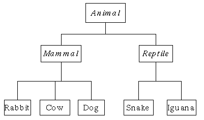

Het dierenrijk
Wil je de leerstof op een andere manier leren gebruiken? Bekijk dan eens de Corona Files oefeningen. Merk op dat de corona files niet zo diepgaand zijn als de andere oefeningen, maar mogelijk wel boeiender. Het is wel zo dat iedere week voort werkt op hetgeen je de missie ervoor hebt gemaakt waardoor je dus finaal een lekker groot project zal hebben.

Maak bovenstaande klassenhierarchie na. Animal is de parentklasse , mammal en reptile zijn childklassen van Animal en zo voort.
Verzin voor iedere klasse een property die de parent klasse niet heeft. (bv Animal heeft “BeweegVoort”, Reptile heeft “AantalSchubben”, etc).
Voorzie in de klasse Animal een virtual methode ToonInfo die alle properties van de klasse op het scherm zet. De overgeërfde klassen overriden deze methode door de extra properties ook te tonen (maar gebruik base.ToonInfo om zeker de parentklasse werking te bewaren).
Maak nu van iedere klasse een object en roep de ToonInfo methode van ieder object aan.
Plaats deze dieren nu in een List<Animal> en kijk wat er gebeurt als je deze met een foreach aanroept om alle ToonInfo-methoden van ieder dier te gebruiken.
Magische dranken (Essential, GPT)
Magische dranken (Essential, GPT)
In deze opdracht ontwerp je een systeem waarin dranken niet alleen dorst lessen, maar ook mysterieuze krachten bezitten. Van gewone drankjes tot zeldzame elixers — elke slok telt! 🧪✨
Ontwerp een systeem waarin verschillende dranken een magische kracht”* hebben.
- Maak een basis‑klasse
Drankmet:- Een property voor de naam van de drank.
- Een constructor die de naam instelt.
- Een virtuele methode
BerekenKracht()die een standaard krachtwaarde (50) teruggeeft.
- Maak een sub‑klasse
Elixerdie erft vanDranken een extra propertyIsZeldzaambevat.- Overschrijf de methode
BerekenKracht()zodat eerst de basiskracht (verkregen viabase.BerekenKracht()) wordt berekend en vervolgens een bonus wordt opgeteld: +20 alsIsZeldzaamtrueis, anders +10.
- Overschrijf de methode
Implementeer een hoofdprogramma waarin je meerdere drankobjecten (bijv. een gewoon drankje en een zeldzaam elixer) aanmaakt en hun berekende kracht op de console toont.
Ziekenhuis (Essential)
Ziekenhuis (Essential)
Deel 1
Maak een basisklasse Patient die een programma kan gebruiken om de doktersrekening te berekenen. Een patiënt heeft:
- een naam
- het aantal uur dat hij in het ziekenhuis heeft gelegen
Een virtual methode BerekenKost zal de totaalkost berekenen en teruggeven. Deze bestaat uit 50euro+ 20euro per uur dat de patiënt in het ziekenhuis lag.
Maak een methode ToonInfo die steeds de naam van de patiënt toont gevolgd door het aantal uur en z’n kosten.
Deel 2
Maak een specialisatieklasse VerzekerdePatient. Deze klasse heeft alles dat een gewone Patient heeft, echter de berekening van de kosten zal steeds gevolgd worden door een 10% reductie.
Toon de werking aan van deze klasse.
Ballspel met overerving
Ballspel met overerving
Deze oefening bouwt verder op het Pong spel uit hoofdstuk 9 van het handboek.
Volgende code toont hoe we een bestaande klasse Ball kunnen overerven om een bestuurbare bal te maken
Basisklasse Ball
We maken een klasse Ball die via Update en Draw zichzelf over het consolescherm beweegt. Enkele opmerkingen:
- We maken sommige variabelen
protectedzodat later de overgeërfde klassen er aan kunnen - Een
staticmethodeCheckHitlaat ons toe te ontdekken of tweeBallobjecten mekaar raken
class Ball
{
public int X { get { return x; } }
public int Y { get { return y; } }
private int x = 0;
private int y = 0;
protected int vx = 0;
protected int vy = 0;
protected char drawChar = 'O';
protected ConsoleColor drawColor = ConsoleColor.Red;
public Ball(int xin, int yin, int vxin, int vyin)
{
x = xin;
y = yin;
vx = vxin;
vy = vyin;
}
public void Update()
{
x += vx;
y += vy;
if (x >= Console.WindowWidth || x < 0)
{
vx *= -1;
x += vx;
}
if (y >= Console.WindowHeight || y < 0)
{
vy *= -1;
y += vy;
}
}
public void Draw()
{
Console.SetCursorPosition(x, y);
Console.ForegroundColor = drawColor;
Console.Write(drawChar);
Console.ResetColor();
}
static public bool CheckHit(Ball ball1, Ball ball2)
{
if (ball1.X == ball2.X && ball1.Y == ball2.Y)
return true;
return false;
}
}Specialisatie klasse PlayerBall
De overgeërfde klasse PlayerBall is een Ball maar zal z’n vx en vy updaten gebaseerd op input via de ChangeVelocity methode:
class PlayerBall : Ball
{
public PlayerBall(int xin, int yin, int vxin, int vyin) : base(xin, yin, vxin, vyin)
{
drawChar = 'X';
drawColor = ConsoleColor.Green;
}
public void ChangeVelocity(ConsoleKeyInfo richting)
{
switch (richting.Key)
{
case ConsoleKey.UpArrow:
vy--;
break;
case ConsoleKey.DownArrow:
vy++;
break;
case ConsoleKey.LeftArrow:
vx--;
break;
case ConsoleKey.RightArrow:
vx++;
break;
default:
break;
}
}
}Eenvoudig spel
We maken nu een rudimentair spel waarin de gebruiker een bal moet proberen te raken.
static void Main(string[] args)
{
Console.CursorVisible = false;
Console.WindowHeight = 20;
Console.WindowWidth = 30;
Ball b1 = new Ball(4, 4, 1, 0);
PlayerBall player = new PlayerBall(10, 10, 0, 0);
while (true)
{
Console.Clear();
//Ball
b1.Update();
b1.Draw();
//SpelerBall
if (Console.KeyAvailable)
{
var key = Console.ReadKey();
player.ChangeVelocity(key);
}
player.Update();
player.Draw();
//Check collisions
if (Ball.CheckHit(b1, player))
{
Console.Clear();
Console.WriteLine("Gewonnen!");
Console.ReadLine();
}
System.Threading.Thread.Sleep(100);
}
}Kan je dit uitbreiden met?
- Ballen met andere eigenschappen
- Meerdere ballen die over het scherm vliegen (benodigdheden: array )
- Meerdere levels
- Score gebaseerd op tijd die gebruiker nodig had om bal te raken (benodigdheden: teller die optelt na iedere
Sleep) - PRO: collision detection tussen de ballen
Drone Delivery System (Final Essentials, GPT)
In deze oefening bouw je de software voor een futuristisch dronetransportbedrijf. Je beheert verschillende types drones die elk hun eigen eigenschappen hebben.
Stap 1: De basis
Maak een klasse Drone met: * Eigenschap Model (string) * Eigenschap Battery (int, start op 100) * Een virtual methode Fly(): * Vermindert de batterij met 5. * Schrijft naar de console: “[Model] vliegt rond. Batterij: [Battery]%” * Als de batterij < 20 is, toont het ook: “Waarschuwing: Low Battery!”
Stap 2: Specialisaties
Maak twee subclasses:
1. DeliveryDrone * Heeft extra eigenschap PayloadWeight (int). * Override de Fly() methode: * Batterij vermindert met 5 + (PayloadWeight / 10). * Schrijft naar console: “[Model] levert zwaar pakketje (Zwaarte: [PayloadWeight]). Batterij: [Battery]%”
2. RacingDrone * Heeft extra eigenschap TopSpeed (int). * Override de Fly() methode: * Batterij vermindert met 10 (want hij vliegt snel). * Schrijft naar console: “[Model] raced tegen [TopSpeed] km/u. Batterij: [Battery]%”
Stap 3: De Vloot (Polymorfisme)
Maak in je Main programma een List<Drone> aan. * Voeg enkele gewone Drones, DeliveryDrones (met verschillende gewichten) en RacingDrones toe. * Schrijf een while-lus die blijft draaien zolang er nog minstens één drone batterij > 0 heeft. * Roep in de lus voor elke drone de Fly() methode aan. * Zorg dat drones met een batterij van 0 of minder niet meer vliegen. * Tip: Je kan dit simuleren met een System.Threading.Thread.Sleep(500) tussen de loops om het ‘real-time’ te laten lijken.
Dierenrijk
var alleBeestjes = new List<Animal>();
alleBeestjes.Add(new Animal() {NaamBeest="Dodo", IsUitgestorven=true });
alleBeestjes.Add(new Cow() {NaamBeest="Milkakoe", KleurVlekken="Paars" } );
alleBeestjes.Add(new Snake() { NaamBeest = "Cobra", HeeftRattelstaart = false });
alleBeestjes.Add(new Snake() { NaamBeest = "Ratelslang", HeeftRattelstaart = true });
foreach (var beest in alleBeestjes)
{
beest.ToonInfo();
}public class Animal
{
public string NaamBeest { get; set; }
public bool IsUitgestorven { get; set; }
public virtual void ToonInfo()
{
Console.WriteLine($"****{NaamBeest}****");
if (IsUitgestorven)
Console.WriteLine("Dit dier is uitgestorven");
else Console.WriteLine("Dit dier is niet uitgestorven");
}
}
public class Mammal : Animal
{
public string Biotoop { get; set; }
public override void ToonInfo()
{
base.ToonInfo();
Console.WriteLine($"En heeft als biotoop:{Biotoop}");
}
}
public class Rabbit : Mammal {
public int LengteOren { get; set; }
public override void ToonInfo()
{
base.ToonInfo();
Console.WriteLine($"De lengte van dit konijn z'n oren is {LengteOren}");
}
}
public class Cow : Mammal {
public string KleurVlekken { get; set; }
public override void ToonInfo()
{
base.ToonInfo();
Console.WriteLine($"Deze koe heeft {KleurVlekken} vlekken");
}
}
public class Dog : Mammal { }
public class Reptile : Animal { }
public class Snake : Reptile
{
public bool HeeftRattelstaart { get; set; }
public override void ToonInfo()
{
base.ToonInfo();
if(HeeftRattelstaart)
Console.WriteLine("Deze slang heeft een ratelstaart");
else Console.WriteLine("Deze slang heeft geen ratelstraat");
}
}
public class Iguana : Reptile { }Magische dranken (Essential, GPT)
class Drank
{
public string Naam { get; set; }
public Drank(string naam)
{
Naam = naam;
}
public virtual int BerekenKracht()
{
return 50;
}
}
class Elixer : Drank
{
public bool IsZeldzaam { get; set; }
public Elixer(string naam, bool isZeldzaam) : base(naam)
{
IsZeldzaam = isZeldzaam;
}
public override int BerekenKracht()
{
int basisKracht = base.BerekenKracht();
int bonus 10;
if(IsZeldzaam)
{
bonus = 20;
}
return basisKracht + bonus;
}
}
class Program
{
static void Main(string[] args)
{
Drank gewoonDrank = new Drank("Gewone Cola");
Elixer zeldzaamElixer = new Elixer("Mystiek Elixer", true);
Elixer standaardElixer = new Elixer("Standaard Elixer", false);
Console.WriteLine($"{gewoonDrank.Naam} heeft kracht: {gewoonDrank.BerekenKracht()}");
Console.WriteLine($"{zeldzaamElixer.Naam} heeft kracht: {zeldzaamElixer.BerekenKracht()}");
Console.WriteLine($"{standaardElixer.Naam} heeft kracht: {standaardElixer.BerekenKracht()}");
}
}Ziekenhuis
Deel 1
public class Patient
{
public string Naam { get; set; }
public int UrenInZiekenhuis { get; set; }
private const int basisKost= 50;
private const int kostPerUur = 20;
public virtual double BerekenKost()
{
int kost = basisKost + (UrenInZiekenhuis * kostPerUur);
return kost;
}
public void ToonInfo()
{
Console.WriteLine($"{Naam} (Kost:{BerekenKost()})");
}
}Deel 2
public class VerzekerdePatient : Patient
{
private const double korting = 0.1;
public override double BerekenKost()
{
double totaalBasisKost = base.BerekenKost();
return totaalBasisKost - (totaalBasisKost * korting);
}
}Aantonen werking:
Eenvoudig:
Patient JosFromUSA = new Patient()
{ Naam = "American Jos", UrenInZiekenhuis = 10 };
VerzekerdePatient JosFromBelgium = new VerzekerdePatient()
{ Naam = "Belgische Jos", UrenInZiekenhuis = 10 };
JosFromUSA.ToonInfo();
JosFromBelgium.ToonInfo();Complexer:
List<Patient> allePatienten = new List<Patient>()
{
new Patient() { Naam = "American Jos", UrenInZiekenhuis = 10 },
new VerzekerdePatient() { Naam = "Belgische Jos", UrenInZiekenhuis = 10 },
};
foreach (var patient in allePatienten)
{
patient.ToonInfo();
}